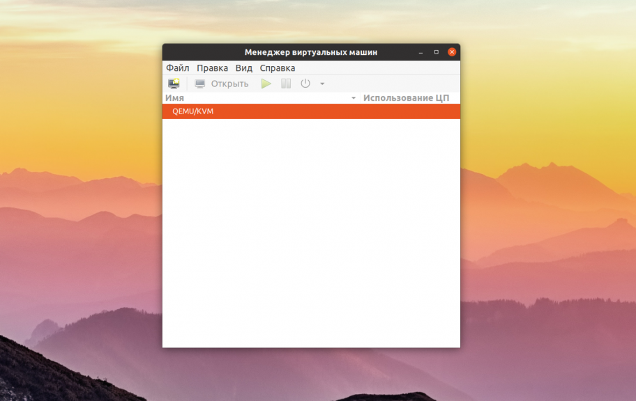

Виртуальные машины для Linux
Списки Обновлено: 23 ноября, 2020 9 admin
Если вам нужно иметь несколько операционных систем на своем компьютере, но вы не хотите использовать двойную загрузку, то остается единственный вариант - это виртуализация и виртуальные машины для Linux. При использовании двойной загрузки на медленных системах перезагрузка из одной системы в другую может занимать до нескольких минут, а это очень неудобно.
Поэтому, виртуализация - это отличное решение, потому что при достаточном количестве оперативной памяти и мощности процессора вы сможете запустить несколько систем одновременно и даже полноценно с ними работать.Но какое программное обеспечение лучше использовать? Что выбрать и как все это работает, все это - тема нашей сегодняшней статьи.
Виртуальные машины - это программы, которые создают программную среду, имитирующую нужное аппаратное оборудование. В эту среду может быть установлена операционная система и затем ее можно будет полноценно использовать. Мы называем такие системы гостевыми, в то время как основная система, установленная на компьютере, называется хостом.
Раньше виртуальные машины выполняли всю работу сами, на программном уровне, и понятно, что все это работало очень медленно. Но потом процессоры начали поддерживать аппаратную виртуализацию, это в разы ускоряет работу гостевой операционной системы. Это такие технологии, как AMD-V от AMD или Intel VT-x от Intel. Правда, эти технологии могут быть по умолчанию отключены в BIOS.
Кроме виртуальных машин, которые полностью эмулируют работу компьютера к виртуализации под linux можно отнести контейнеры, например, LXC или OpenVZ. Дальше мы рассмотрим виртуальны машины для Linux, которые вы можете использовать для установки своих систем.
VirtualBox - это универсальное программное обеспечение для виртуализации в Linux, которое поддерживает и другие операционные системы, в том числе Windows и MacOS. Вы можете установить сюда практически любую систему, кроме, конечно, систем, предназначенных для устройств на чипе ARM. Все установленные виртуальные машины хранятся в файлах, которые содержат образы дисков. Это позволяет их очень просто выполнить их резервное копирование или перенос на другой компьютер просто скопировав файл машины.
VirtualBox поддерживает как 32, так и 64 битные системы и вы можете установить не только Linux дистрибутив, но и Windows или даже MacOS. Все системы будут отлично работать. Во время создания виртуальной машины вы можете выбрать профиль гостевой ОС, для которого автоматически выставятся правильные параметры памяти, процессора и видеокарты.
Кроме непосредственно виртуализации, VirtualBox поддерживает и дополнительные функции, например, запись видео с экрана виртуальной машины, и создание снимков системы для быстрого восстановления и создание виртуальной сети между несколькими машинами. Кроме того, если установить дополнения гостевой ОС, то можно настроить общий буфер обмена между хостовой и гостевой системой, передавать между ними файлы или даже интегрировать окна программ гостевой системы в основную.
Можно сказать, что это лучшая виртуальная машина для Linux, она предлагает все необходимые возможности, и в то же время достаточно проста в использовании.
В отличие от VirtualBox, которая распространяется с открытым исходным кодом, это коммерческий продукт, полная версия которого стоит денег. Но для домашнего использования есть упрощенная версия, которую можно использовать полностью бесплатно.
VMWare имеет почти все те же возможности, что и VirtualBox, в некоторых тестах она показывает себя лучше чем первый вариант, но в целом их производительность одинакова. Тоже есть возможность организовывать сеть между виртуальными машинами, объединять буфер обмена и передавать файлы, но нет записи видео.
Примечательной особенностью VMWare есть то, что для некоторых систем разработаны и уже готовы сценарии автоматической установки, которые позволяют установить систему в автоматическом режиме и не указывать слишком много параметров. Это может быть очень удобным в некоторых ситуациях.
Если вы хотите запустить не привычную операционную систему x86, а систему для устройств ARM, например, Android, Raspbian или RISC OS, то тут вам не помогут две предыдущие виртуальные машины Linux. С такой задачей может справиться только Qemu.
Qemu - это сокращение от Quick Emulator. Это очень простая в настройке консольная утилита, но позволяет делать многие интересные вещи на уровне VirtualBox, вы можете запускать любые операционные системы, в том числе и ARM, можете установить ОС на реальный жесткий диск или в файл, использовать аппаратное ускорение и даже автоматически скачивать некоторые дистрибутивы через интернет.
Несмотря на свое название, это очень мощный инструмент для работы с виртуализацией в Linux, для установки Qemu в Ubuntu выполните:
sudo apt install qemu qemu-kvm libvirt-bin
Подробнее про использование Qemu можно почитать в этой статье.
Если вам не нравится управлять вашими виртуальными машинами с помощью командной строки, можно воспользоваться графическим интерфейсом для Qemu под названием Gnome Boxes. Эта утилита позволяет в несколько кликов создать новую виртуальную машину. При чём вам не нужно иметь установочный образ, программа может сама загрузить его из сети. Кроме создания виртуальных машин можно подключаться к удалённым виртуальным машинам по протоколу RDP или VNC. Для установки программы в Ubuntu используйте такую команду:
sudo apt install gnome-boxes

KVM или полностью Kernel-based Virtual Machine (виртуальная машина на основе ядра) - это реализация платформы виртуализации на уровне ядра, которая предоставляет дополнительные возможности для Qemu и очень высокую скорость работы благодаря работе непосредственно в ядре.
Все это означает что KVM быстрее и стабильнее VirtualBox, но KVM намного сложнее в настройке и обслуживании. Технология KVM - это очень популярное решение для размещения виртуальных машин, в том числе на множестве серверов в интернете.
Чтобы начать использовать KVM сначала нужно проверить, поддерживает ли ваше оборудование аппаратное ускорение, для этого используйте утилиту cpu-checker. Если все поддерживается то вы можете перейти к установке KVM:
sudo apt install qemu qemu-kvm libvirt-daemon libvirt-clients bridge-utils virt-manager
После установки вы сможете получить доступ к виртуальным машинам KVM с помощью менеджера виртуальных машин, который появится в меню. С помощью этого менеджера управляются и другие системы виртуализации Linux, например, XEN.
Это еще одна платформа виртуализации для Linux, которая очень похожа на KVM. Но тут есть некоторые отличия. Как и KVM здесь поддерживается аппаратное ускорение, множество архитектур, в том числе и ARM, а также запуск различных гостевых систем, включая Windows. Но главное отличие заключается в том, что KVM по умолчанию встроен в ядро Linux, а для работы Xen вам понадобиться специально собранное ядро с его поддержкой.
Из других особенностей Xen можно отметить, что система будет работать достаточно быстро даже без аппаратного ускорения, если вы будете запускать Linux.
В этой статье мы рассмотрели лучшие виртуальные машины для Linux. Как видите виртуализация на linux развивается очень быстро и есть достаточно много решений, которые вы могли бы использовать в своей системе. Какую виртуальную машину или систему виртуализации используете вы? Напишите в комментариях!
Похожие записи:
Нет похожих записей